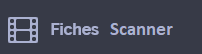
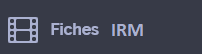

Palestine (Arabe)
Présentation
مرحبا، أنا ممرضة، سأستعمل الهاتف لترجمة الأسئلة التي سأطرحها عليك، هل انت موافق ؟
ممرضة
طبيب
مساعدات أولية
متطوع
عميل إستقبال
طالب طب
قابلة
سكرتيرة
الرعايه
Identité
هل بإمكانك إعطائي جواز سفرك ؟
هل بإمكانك إعطائي بطاقة هويتك ؟
هل بإمكانك اعطائي بعض الوثائق التي تحمل اسمك؟
هل تملك بطاقة صحة اوروبية ؟
هل تملك أي تغطية صحية ؟ هل تحمل بطاقتك معك ؟
ستكون تكاليف الرعاية على حسابك
تكاليف الرعايه لن تكون على حسابك
من اى بلد حضرتك ؟
ما عنوانك الحالى ؟
هل لديك رقم تليفون نستطع التواصل معك من خلاله
Attente
انتظر من فضلك
على الكراسي
على المقعد
فى صالة الانتظار
سوف نناديك
شكرا لعدم الاكل او الشرب او التدخين فى صالة الانتظار
يجب علئ عائلتك ان تنتظر هنا
وفقا لحالتك الصحية سيطلب الطبيب أحيانا اجراءات كضغط الدم او اشعه . يمكن يطلب منك تكون تحت الملاحظه لرعاية حالتك الصحيه
مطلوب من حضرتك عدم الاكل او الشرب حتى يمنحك الطبيب الإذن . بعض الفحوصات تتطلب ان تظل صائم
يجب ان تنتظر ساعه لتحصل على نتائج ضغط الدم
Accueil
ما الذى جرى لك
هل تشعر بألآم ؟
نعم
لا
بين لى اين مكان الالم
سأفحصك
هل تستطيع تحديد ألمك من صفر إلى عشرة (تقييم)
علامة عشرة لو كان الألم لا يحتمل
صفر
واحد
اتنين
ثلاثه
اربعه
خمسه
ستة
سبعه
ثمانية
تسعه
عشرة
هل ممكن تنزع ملابسك لافحصك من فضلك ؟؟
تستطع ترك ملابسك الداخليه
تستطع الجلوس على الكرسي
تستطيع النوم على تربيزة الفحص
يمكنك الاستلقاء على النقاله
Neurologie
هل فقدت الوعى؟
هل تعرف فى اى يوم نحن ؟
هل تعرف أين انت ؟
انظر لأصبعى
هل تستطع تحريك يديك ورجليك؟
سألمك يديك ورجليك هل تشعر انى المسك؟
انظر لي في العين ، سأراقب عينيك.
هل تحس بتنمل ؟ واين بالضبط ؟
ادفع اليدين
افتح عينيك
افتح فمك
ارفع ذراعك اليمين
هل عندك صداع (الم ) فى الرأس؟
الألم ظهر
تدريجيا
فجأة
هل لديك ألم فى الرقبة
هل سافرت الشهور الاخيرة؟
فى أى بلد ؟
هل الضوء يزعجك؟؟
هل الضوضاء تزعجك؟؟
سوف ألدغ طرف اصبعك لأعرف معدلات السكر
Pneumologie
سأضع يدى على بطنك لكى أعد نفسك . تنفس طبيعيا ولا تتكلم خلال هذا الوقت
هل تشعر ان نفسك قصير
خذ نفسا عميقا واحبسه
تنفس عاديا
تنفس بعمق
هل تدخن ؟
هل تعاني الربو؟
هل أخدت علاج الربو ؟
هل إستنشقت راءحة دخان ؟
سأسمح لك بتفجير أنفك لمعرفة ما إذا كان هناك أي آثار للسخام.
Cardiologie
صف وجعك
هل هو شعوربالضيق ؟
هل هو ألم كاالوخز؟
هل هو شعور حارق ؟
هل يعود الوجع الى اي جزء اخر من بدنك ؟ هل يمكن ان تريني اين ؟
منذ متى تعاني هدا الوجع ؟
الدقائق
ساعات
أيام
سآخذ قياس نبضك.
سأضغط على اظافرك برقه
سأقيس ضغط دمك
هل لديك أي خفقان؟
افتح فمك وارفع لسانك. سأقدم لك بعض الأدوية.
هل هذا الدواء يخفف ألمك؟
هل تشرب كحول ؟؟
هل أنت مصاب بالسكر؟
هل عندك كوليسترول؟
سأقيس دقات قلبك . هذا غير مؤلم . حاول ألا تتحرك خلال هذه اللحظات
Malaise
هل أحسست بقدوم توعك
بماذا أحسست أثناك التوعك
الوخز و التنمل
دوار، دوخة
تعب شديد
هل كان عندك دوار أو دوخة من قبل ؟
"الاوجاع تمتد إلى أي مكان من جسمك ؟ إلى أين؟ "
في اي مكان من جسمك أحسست بهاذه العلامات ؟
كم من وقت دامت حالة الغثايان ؟
هل تبولت عن غير قصد؟
هل قضمت طرف لسانك ؟ إفتح فمك
هل حدث لك أي تشنجات؟
هل أكلت اليوم؟
Digestif
وضح لى اين مكان الالم
هل ينتشر الألم في مكان آخر؟ ألى أين؟
هل فقدت وزن خلال هذه الشهور الأخيرة
هل تشعر بحرقة عند التبول؟
هل لاحظت أي دم في البول؟
ما هو آخر تاريخ للعادة الشهرية ( الحيض) ؟
هل أنت حامل؟
متى كانت آخر مرة قمت فيها بالتبول اليوم؟
هل تعاني من أي إمساك؟
منذ كم يوم؟
هل حدث لك أي غثيان؟
هل عانيت من أي نوبات إسهال؟
هل تقيأت؟
هل لاحظت أي دم في البراز؟
هل لديك أي غازات؟
أحتاج إلى إجراء فحص المستقيم. هل انت موافق على هذا؟
يمكنك التبول في هذا الجرة حتى نتمكن من اختباره.
عليك ان تغسل اعضاءك التناسيلة قبل ان تبول في الوعاء
Infectieux
هل انت مسلوع او ملدوغ؟
وريني اين
وريني اين جاءت النقطات الاولة
من متى الرجل احمر؟
هل يحك ؟
عليك ان تجلس في انعزال عن الآخرين
يجب أن تضع هذه الكمامة على وجهك.
هل كان لديك علاقات حميمة غية أمنة؟
سأقيس درجة حرارتك.
Ophtalmologie
هل رؤيتك مشوشة ؟
هل ترى الأشياء مزدوجة ؟
هل تشعر بصداع ؟
هل تشعر بدوخة؟
هل تلقيت ضربة على رأسك مؤخرا؟
Antécédents
هل تعاني من أي مرض كالسكري، أو الضغط العالي؟
هل عولجت بالمستشفى مؤخرا؟
هل تتلقى علاجا حاليا؟
هل معك وصفة العلاج بالأدوية التي تتناولها؟
هل تعاني من الحساسة ؟ أي نوع منها ؟
هل لديك شخص اخر في عائلتك أصيب بهذا المرض؟
Pédiatrie
هل فقد الطفل أي وزن؟ كم الثمن؟
هل تلقى الطفل التطعيمات في موعدها ؟
هل لديه أخوه أو أخوات مريضون ؟
هل يأكل جيدا ؟
هل يتقيأ
هل يبدو الطفل منفعل أكثر من المعناد؟
هل يبدو الطفل متعبا أكثر من المعناد؟
هل عنده إسهال؟
Gynécologie
هل أنت حامل ؟
منذ متى؟
هل لديك الدورة الشهرية ؟
هل تنزفين ؟
الدم النازل كان لونه أحمر أم أسود؟
هل عانيت من مشاكل في حملك السابق؟
هل تشعرية بطلق الولادة ؟
هل تفقدين المياة؟
هل تشعرين بتحرك الجنين؟
هل لديك موانع الحمل ؟
أحتاج إلى إجراء فحص أمراض النساء ، والاستلقاء على الطاولة.
عليك أن تنزع ملابسك الداخلية
Traumatologie
هل قذفت خارج السيارة؟
كم كانت السرعة التي تسير بها؟
هل كنت تضع خوذة؟
هل كنت تضع حزام السلامة؟
هل سقطت؟
كم كان الارتفاع الذي سقط منه؟
خد مضادات تختر الدم لكي يصبح الدم انسيابي
سوف أقوم بتثبيت طوق لحماية عمودك الفقري .
علي أن أضع مطهر على الجرح.
لا بد لي من خياطة الجرح.
علي أن أضع ضمادة.
سأقوم بتخدير المنطقة المحيطة بالجرح
لا تتحرك
سأقوم بوضع جبيرة لك
عليك أن تقوم بعملية جراحية
Examens
عليك أأن:
سأقوم لك ب ..
سوف اطعك على جهاز التنقيط
سحب الدم
ضمادة
إبرة
ساقوم بعسلك/الاسفنج
ماسح
الفحص بالاشعة
جبيرة
الموجات فوق الصوتية
عملية جراحية
اليوم
غدا
يجب عليك الاستحمام مع الشامبو قبل العملية.
الاحتبار ليس مؤلم
بعد العملية سيكون لديك:
قسطرة بولية
انبوب التغدية
استنزاف
ندبة
تحتاج لازالة الحلي و التقوب
تحتاجين لازالة طلاء الأظافر الخاص بك.
تحتاج إلى إزالة أطقم الأسنان وأدوات السمع.
أخبرنا إذا كان لديك:
صانع الوتيرة
صمام القلب
الدعامة
بدلة
مقاطع داخل الجمجمة
غرسة القوقعة
زرع عدسة داخل العين
بعض المعادن في الجسم
مزيل الرجفان
خط (القسطرة المركزية المُدرجة محيطياً)
هل ترضعين طفلك رضاعة طبيعية؟
هل تستطيع الجلوس؟
هل تستطيع الوقوف؟
هل تستطيع المشي؟
Traitements et consignes
سأعطيك
بعض الأدوية
بعض المسكنات
بعض المضادات الحيوية
لا تشرب
لا تأكل
ليس لديك لتستيقظ.
يجب أن تظل مستلقيا على ظهرك
لا تدخن / توقف عن التدخين
للاتصال بنا، اضغط هنا
لإضاءة الأنوار أو اطفائها، اضغط هنا
دورات المياه هنا
الحمام هنا
غرفتك هنا
Conclusion
هناك كسر
لا يوجد أيّ كسر
يجب عليك الخضوع لعملية جراحية
يجب عليك العودة غدا صباحا
:يجب عليك العودة في
:يجب عليك إزالة القطب في
يجب عليك إرتداء جبيرة
يجب أن يكون لديك جبيرة
تستطيع أن تعود إلى المنزل
يجب عليك الذهاب إلى المستشفى
يجب عليك البقاء في المستشفى
سيتمّ تحويلك إلى قسم آخر